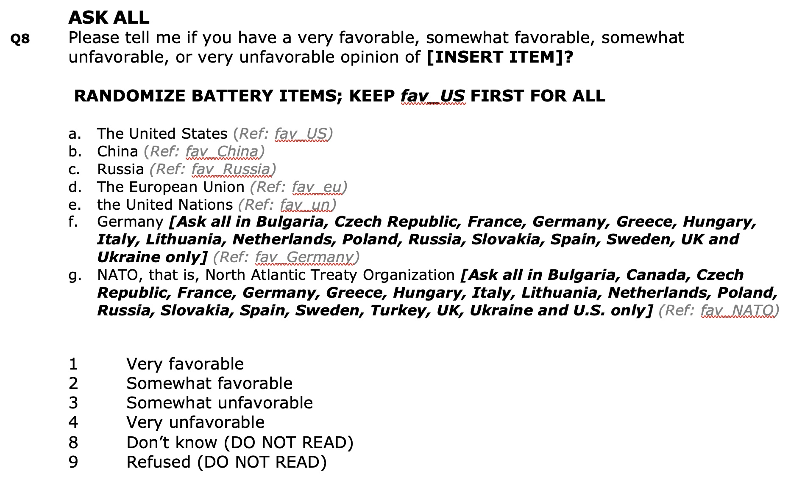
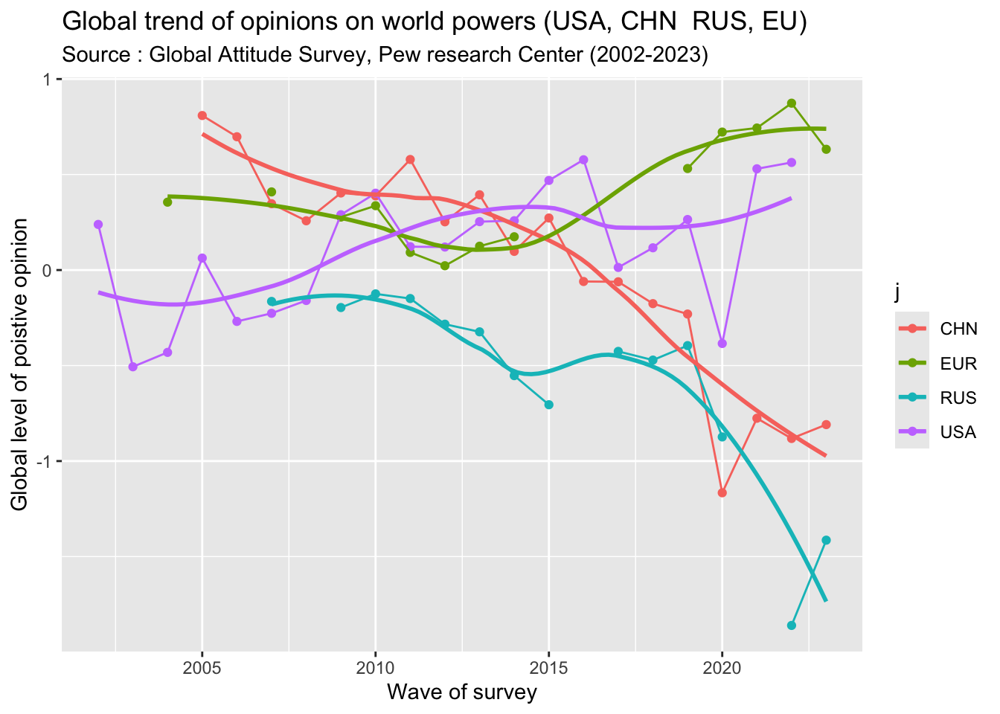

![]()
Introduction
We present here very preliminary results of an analysis of data frome the Global Attitude Survey, collected by the Pew Research Center since 2002. More details can be found in another website dedicated to World Polarisation
Data
The data used in our analysis has been extracted from the website of the Pew Research Center where they can be freely downloaded. They are more precisely extraction from the Pew Global Attitude Survey from 2002 to present (2023). From 2002 to 2023, 22 waves of the PGAS has been realized and the majority of questions has changed over time or have been formulated in a different way, which make comparisons difficult. We have therefore selected a very limited number of questions which has kept exactly the same wording over time and has been asked in different waves.
The opinion on world powers
We will focus here on the question related to opinion of people about the USA and other major states and international organisations in the world. This question is more complex because it is a battery of questions about different countries but also sometimes different people, different organisation or even different religions. The general rule is to start by the question about the opinion of USA (and eventually “Americans”) and then to propose the other items in a random order. It suggest that USA/Americans are used as a reference around which we can measure positive or negative deviations. Another important complication with this question is the fact that some items are proposed to all countries under investigation but other are only asked in selected countries. In this case, we are oblige to admit that the comparison will be biased because the full list of items has a systemic influence on the results about each item. As an example, consider the formulation of the question in the waves of 2009 an 2019.


The wording of the question is the same and the ordinal scale at four level is equivalent, but the fact that the list of items has changed introduce a difficulty in the analysis of the results, even if we decide to focus only the items that are present in the two waves (USA, China, Russia, EU, UN). In 2009, the evaluation is influenced by questions about religions which is not the case in 2019. Even if we consider a single year like 2019, the fact that NATO or Germany are added to the items in Europe but not in other countries of the world will probably modify the answers about Russia. Considering the difficulties induced by the halo effect, we have decided to limit our selection of answers to the items that (1) has been asked to all countries and (2) the item that are about states or regional organization but not about peoples or religions. In the following analysis, we limit our analysis to USA, China, Russia and EU that are the item that has been themost frequently asked.
Spatial coverage
There is a great variability in the list and number of states that was investigated by the PGAS. Generally speaking the number of states investigated was more important for the odd-numbered years with a larger extension toward developping countries from the South. The even-numberd years was generally characterised by a lower number of countries and a focus on rich countries from the North. But they are many exceptions to this rule.
The countries that has been the most present in the 22 waves are members of “the Western” (Germany, France, UK, Spain, Japan, Poland) and can be considered as “friends” of the US. The US themselves has not been investogated in the final period 2021-2023, probably because the questions asked in PGAS are also asked in other national surveys of the Pew Research Center (PRC). It is certainly possible to find the data for these years elsewhere on the website of the PRC.
Russia has been systematically investigated from 2002 to 2015 but not in 2016. Then present again in 2017-2019 but not after. We can imagine that the possibility to realize surveys in Russia became more difficult after the first war of Ukraine (2014) and impossible with the beginning of the Covid crisis (2020)
China was investigated in 2002 and in 2005-2016 but never after this period of time. As in the case of Russia, we can imagine that it became difficult and finally impossible to realize surveys in these country after the designation of Xi Jiping as head of state in 2013.
In the ‘South’, the coverage is much more important for large emerging countries (Indian Indonesia, Turkey, Brazil, …) than smaller one.
Africa is less covered than Middle-East
etc.
From statistical point of view we should just keep in the moment that the survey has been realized at least one time in 70 countries of the world. But only a minority of them are likely to be used for the analysis of trends over long period of time.

Looking at the map, it appears very clearly an uneven spatial distribution with very spare coverage in Africa or central Asia as compared to Americas, Europa and Southern or Eastern Asia. The PGAS will therefore not offer a perfect basis for the analysis of the evolution of global opinion in the world. But it makes nevertheless possible to explore some great tendencies in all part of the world between 2002 and 2023.
Multidimensional array
In order to have a better formalisation of the data, we will transform the database in a multidimensional structure where each opinion will be describe by a single variable \(O_{ijt}\) where :
- \(O\) is an opinion measured on a Likert scale with 4 levels (“Very favorable”, “Almost favorable”, “Almost unfavorable”,“Very Unfavorable”)
- \(i\) is the origin of the opinion (i.e. the place of survey where the opinion has been collected)
- \(j\) is the target of the opinion (i.e. the country or organisation that was evaluated). We limit here the value to three case that are USA, China and Russia.
- \(t\) the time period (i.e. wave of survey) of collection of the opinion.
The database is eventually completed by two structural parameter describing the age \(A_{it}\) and the sex \(S_{it}\) of the person who has formulated the opinion. We can eventually cross the results with another variable \(R_{it}\) describing the opinion on religion using another Likert scale with 4 levels.
Lest but not least each sample collected in a country i a t time t is associated with a weigthing criteria \(W_{it}\) that insure a better representation of the full population.
We transform Oijt in a boolean variable Fijt related to favorable opinion (very favorable or mostly favoable) and we eliminate people without opinion.
Evolution of global opinion on major power
We have used a logit model where the probability to formulate a positive opinion depends from the place of survey (as some countries are more likely to give positive or negative opinions to all target countries) and the combination of the time period and the target countries.
\(log \frac{p}{1-p} = \alpha + \beta_i.origin_i + \phi_{jt}.[target\times time]_{jt}\)
We can therefore extract the parameters \(\phi_{jt\) which indicate for each target country (USA, Russia, China, EU) an estimation of the probability to receive a favorable opinion at each period of time where the survey provide information.

After elimination of the variations related to countries of origin, we obtain comparative parameter of appreciations of world powers at different period of time and we can draw tendencies through interpolation by loess method. What appears clearly in the figure is a recent divergence between US and European Union on the one hand, China and Russia on the other hand. More precisely :
European Union has maintained a good level of appreciation during all the period with apparentlyan increase between 2014 and 2019-23, but difficult to validate because lack of data.
USA has experimented a more chaotic trend with ups and downs in relation with the different presidents. But has a whole the general trend appears to be positive during the period.
China had initially an excellent position and was the most appreciated world power in 2005-2006 and also 2009-2013. But this favorable appreciation declined regularly and especially in 2020 , probably in relation with the covid crisis.
Russia has the same appreciation than USA in 2007-2008 and remained stable with just a slow decline in 2015. But the decrease was very strong after 2019 and the lowest level was reached in 2022-23 with the second war in Ukraine.
This results has to be cautiously interpreted because, despite the fact to control the effect of the places of survey, it remains a strong influence of the selection of countries involved or excluded from the Global Attitude Survey.
Classification of survey countries according to world power preferences
We can proceed to a second analysis where we try to evaluate the average opinion of survey countries on the four world power during the period of observation 2002-2023. We assume therefore that the hierarchy of opinion of this world power has remained stable over time inside each survey country which is probably not the case. But we expect to reveal some general organisation of the world in regions sharing the same geopolitical attitudes. The logit model used in this case take the form :
\(log \frac{p}{1-p} = \alpha + \delta_t.time_t + \tau_{jt}.[origin\times target]_{ij}\)
We obtain a table of the parameter \(\tau_{jt}\) with fours columns (one for each power) and as many lines as survey countries. We eliminate the lines corresponding to countries that has not given an opinion about each of the four world powers. We eliminate also USA, Russia and China in order to avoid biases related to self appreciation. This table is then used for the realization of a Principal Component Analysis and a Hierachical Clustering using war crteria.
Two major dimensions
 We notice that the two first dimension summarize more than 80% of the information and only minor details are collected by dimension three and four.
We notice that the two first dimension summarize more than 80% of the information and only minor details are collected by dimension three and four.
- Dim1 reveals a general opinion on the four world powers that can be generally positive (right) or generally negative (left).
- Dim2 reveals a polarisation between the ‘Western and the Rest’ or, said differently, between ‘Global North and Global South’. Countries located on the top are more favorable to Russia and China than to the US and EU. Countries on the bottom are characterized by the opposite.
- Dim3 characterized specific situations of dissociation between preferences for China and Russia that can for example happen in the case of Vietnam.
- Dim4 characterized excpetional cases of dissociation between preferences for US and Europe that can for example happen in the case of UK.
We can now examine the position of survey countries on these different dimensions. But we can firstly proceed to a hieararchical clustering in order to discuss the position of group of countries rather than single ones. We obtain clearly five group of countries with characteristic profiles.
Five types of opinion
Cluster 1 is characterized by a very negative opinion about USA and EU and a negative opinion about Russia. Only China is characterized by an average opinion comparable to the rest of the world. The countries member of this cluster are typically arabic countries from Middle East (Egypt, Jordan, Pakistan, Occupied Palestinian Territories, Turkey)
Cluster 2 is characterized by a positive opinion of EU, a neutral opinon on USA and a very negative opinion of Russia and China. This situation is typically observed in countries member of the EU but rather from western and northern part (France, Germany, Belgium, Sweden) but also other OECD countries (Japan, Korea, Canada, Australia, …)
Cluster 3 is generally characterized by an average profile. More precisely it is characterized by neutral opinion of Russia, slighltly negative opinion on USA, slightly positive opinion on China and more negative opinion on European Union than in the rest of the sample. This situation corresponds to a large cluster of emerging countries located all around the world, including european countries from southern and eastern Europe like (Greece, Slovenia, Czech Republic, …). UK is member of this group as well as Israel.
Cluster 4 is a very specific case of countries having a much more positive opinion on Russia than usual, a rather positive opinion on USA and a rather negative opinion on China. Countries located in this group are european countries with good relations with Russia (Bulgaria, Slovakia) or asian countries characterized by negative relation with China, generally due to border conflicts (India, Vietnam, Philippines).
Cluster 5 is the complete opposite of Cluster 1 and is characterized by very positive opinion about all the world powers without distinction. This situation is typically associated to all countries from sub-saharan Africa present in the surveys (Ivory Coast, Ethiopia, Ghana, …) but also some other poor and developping countries (Bangladesh, Nicaragua, Thailand)
Mapping geopolitical proximities
We can finally elabore a geopolitical map of countries opinion about the major world power over the period 2002-2023. To do that, we project the clusters on the two first dimensions of PCA and visualize tthe ellipes of dispersion of each group.
The most striking result of the analysis is the fact that many clusters are clearly associated to specific world regions even if they are exceptions to this rule. Further research will try to explain the origin of this regional pattern. Is it just a matter of correlation with hidden variables ? Or are they geographical effects of distance and diffusion of opinion ?
Citation
@online{grasland2024,
author = {Grasland, Claude},
title = {Mapping {Global} {Opinion}},
date = {2024-10-12},
url = {https://worldregio.github.io/en/posts/2024-10-12-global-opinion/},
langid = {en}
}